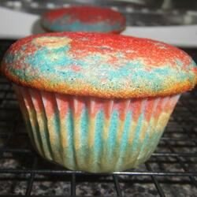

cake

this right here is a nice simple cake
- 1 cup white sugar
- half cup of butter
- 2 eggs
- 2 teaspoons vanilla extract
- 1 and a half cups all-purpose flour
- 1 and 3/4 teaspoons baking powder
- 1/2 cup milk
- Preheat oven to 350 degrees F (175 degrees C). Grease and flour a 9x9 inch pan or line a muffin pan with
paper liners.
- In a medium bowl, cream together the sugar and butter. Beat in the eggs, one at a time, then stir in the
vanilla. Combine flour and baking powder, add to the creamed mixture and mix well. Finally stir in the milk
until batter is smooth. Pour or spoon batter into the prepared pan.
- add cheese
- add pepperoni on top cheese
- Bake for 30 to 40 minutes in the preheated oven. For cupcakes, bake 20 to 25 minutes. Cake is done when it
springs back to the touch.